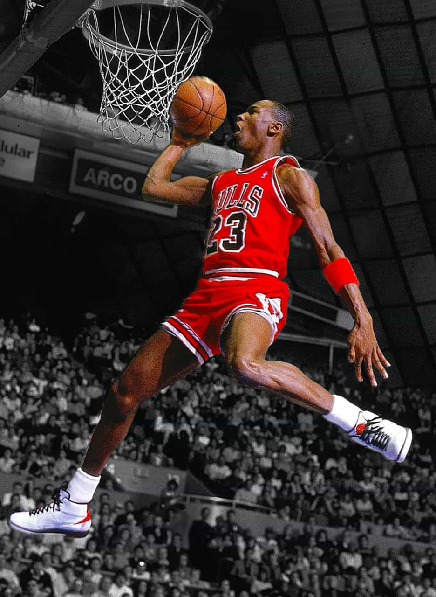

Temetrius Jamel "Ja" Morant, (Dalzell, Carolina del Sur, 10 de agosto de 1999) es un jugador de baloncesto estadounidense que pertenece a la plantilla de los Memphis Grizzlies de la NBA. Con 1,91 metros de altura juega en la posición de base.
Consiguió estar entre los mejores jugadores de su estado en la escuela de secundaria Crestwood en Sumter, Carolina del Sur. Supuso un impacto inmediato cuando recaló en Murray State, ganándose un puesto entre los mejores 5 jugadores de su conferencia como jugador de primer año. Morant destacó en su segunda temporada, en la que fue elegido Jugador del Año de la Conferencia del Valle de Ohio y fue el líder de la NCAA en asistencias.A su vez, fue el primer jugador de la historia de la NCAA en promediar como mínimo 20 puntos y 10 asistencias por partido en una sola temporada.
Fue considerado uno de los mejores prospectos americanos y un potencial top 2 pick de cara al Draft de la NBA de 2019, puesto que acabó obteniendo. Al término de su primera temporada fue nombrado Rookie del año de la NBA.
 Ir a portada
Ir a portada
 Ir a Lebron James
Ir a Lebron James
 Ir a Stephen Curry
Ir a Stephen Curry
Ir a Michael Jordan